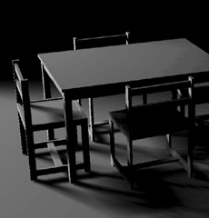
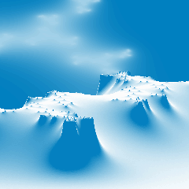

| Lightsmark |
Windows binary.
| Home | Software | Articles | Photos |
|---|
| My contributions to other projects | |
|---|---|
| 7-zip | small patch out of mainline |
| wxWidgets | small patches |
| Assimp | small patches |
| OpenCollada | small patches |
| FCollada | small patches |
| RenderLights | majority of code (2008-2015) |
| Glut | small patch out of mainline |
| Darwinia+ | port of renderer to Xbox360, graphics effects (2006-2007) |
| Mafia II | majority of renderer (2004-2006) |
| Wings of War | multiplayer, instant action (2003-2004) |
| Smarthouse | switches, displays, touch, infra, voice, networking, heating (2002-2003) |
| My projects |
|---|
|
| |
Windows binary. |
 |
Windows binary. |
Windows binary. User comments. |
 |
Middleware for game developers. |
 |
Windows binary. |
|  |
Windows binary. Source code. |
|  |
DOS/Windows binary. User comments. |
Windows+Linux binaries. Source code. Paper. |
DOS/Windows binary, needs SoundBlaster or AdLib. YouTube video. User comments. |
DOS/Windows binary. User comments. |
 |
Windows binary. Source code. |
|
 |
DOS/Windows binaries. Source code. |
DOS/Windows binaries. Source code. |
|
|
| CiA |
| Pisqorky for Wizards and Dummies |
| Other sw... |